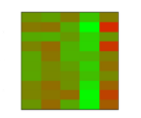
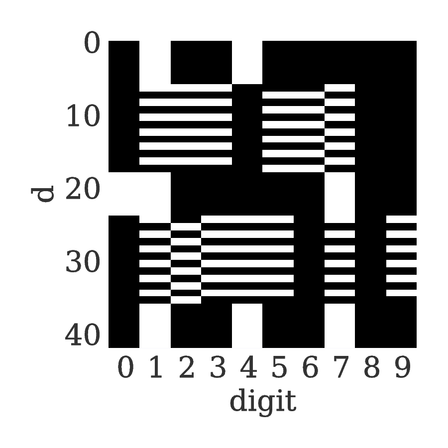
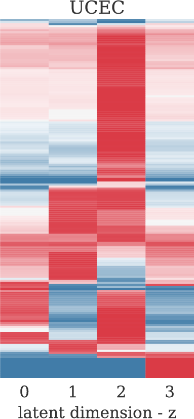
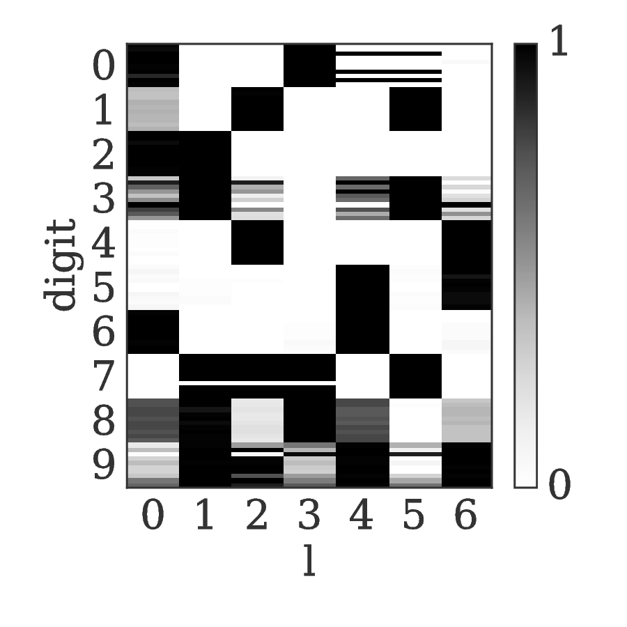
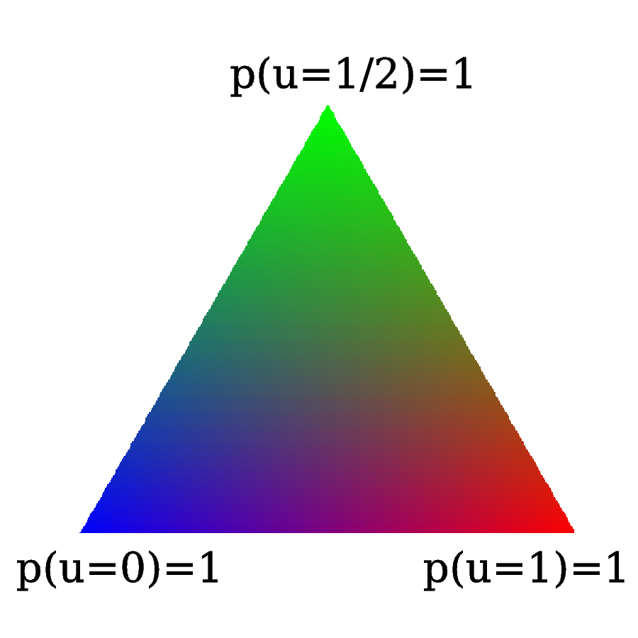

Latent variable models, deep generative models and the Hamming Machine
Tammo Rukat
September 14, 2016
Table of Contents
Latent variable models
What are latent variables?
- Unobserved variables?
- Something like parameters?
- Example: A Gaussian mixture model $$ p(\mathbf{x}_i|\theta) = \prod\limits_{k=1}^{K} \pi_k \mathcal{N}(\mathbf{x}_i|\mu_k,\Sigma_k) $$
- Latent variables: \(\pi_k\) are local to every data point.
- Parameters \(\mu_k\) and \(\Sigma_k\) act globally.
Why use latent variable models?
- Visualise data
- Compress data
- Understand the data generating process
- Classification
- Feature learning
Example of modified factor analysis: ZIFA

single cell RNA seq gene expression data
two-dimensional embedding
Directed graphical models
- Also known as: Bayesian networks or causal networks
- By use of the chain rule of probability any joint probability distribution can be factorised as $$ p(x_{1,\ldots, N}) = p(x_1) p(x_2|x_1) p(x_3|x_2,x_1) \ldots p(x_N|x_{1,\ldots, N-1}) $$
- Graphical models represent joint distributions by making conditional independence assumptions.
$$ \text{height} \not\perp \text{vocab} $$
$$ \text{height} \perp \text{vocab} | \text{age} $$
$$ p(\text{height},\text{age},\text{vocabulary}) = p(\text{height}|\text{age}) p(\text{vocab}|\text{age}) p(\text{age}) $$
LVMs as graphical models
- Notation
- Indices
- \({n = 1\ldots N\; \text{- observations/specimens}}\)
- \({d = 1\ldots D\; \text{- features (pixels, genes,}\ldots)}\)
- \({l = 1\ldots L\; \text{- latent dimensions}}\)
- \({k = 1\ldots K\; \text{- layers}}\)
- Variables
- \({x_{nd}\; \text{- observations}}\)
- \({u_{ld}\; \text{- parameters (globale variable)}}\)
- \({z_{nl}\; \text{- latent variables (local variables)}}\)
- Indices
- Another common example: Principal component analysis $$ p(\mathbf{z}_n) = \mathcal{N}(\mathbf{\mu}_0,\Sigma_0) \\ p(\mathbf{x}_n|\mathbf{z}_n,\theta) = \mathcal{N}(\mathbf{U} \mathbf{z}_n,\sigma^2\mathbf{I}) $$
- Graphical model
Restrict to a single observation and unroll in L and D
Most neural networks are latent variable models
Inference in latent variable models
- We want to choose parameters that maximise the marginal likelihood of the observed data $$ \mathcal{L}(\theta) = \sum\limits_{n=1}^N \log p(\mathbf{x}_n |\theta) = \sum\limits_{n=1}^N \log \left[ \sum\limits_{\mathbf{z}_n} p(\mathbf{x}_n, \mathbf{z}_n|\theta) \right] $$
- The marginal is typically hard to compute
- Ansatz: Compute complete data log likelhood $$ \mathcal{L}_c(\theta) = \sum\limits_{n=1}^N \log p(\mathbf{x}_n,\mathbf{z}_n|\theta) $$
- But we are not given the complete dataset \(\{\mathbf{X},\mathbf{Z}\}\), only incomplete data \(\mathbf{X}\).
- What do we know about \(\mathbf{Z}\)? The posterior for given parameters: \(p(\mathbf{Z}|\mathbf{X},\theta)\)
- Therefore use the expeceted complete data log likelihood under the posterior distribution of the latent variables for fixed parameters \(\theta_{\text{old}}\) $$ Q(\theta,\theta_{\text{old}}) = \sum\limits_{\mathbf{Z}} p(\mathbf{Z}|\mathbf{X},\theta_{\text{old}}) \log p(\mathbf{X},\mathbf{Z}|\theta) $$
Expectation Maximisation for a Gaussian mixture model
- E-Step: Use current parameters \(\theta_{\text{old}}\) to calculate the expected complete data log likelihood \(Q\)
- M-Step: Find new parameters that maximise \(Q\): \(\theta_{\text{new}} = \text{arg max} Q(\theta,\theta_{\text{old}})\)

Example for Gaussian mixture model: Very similar to K-means algorithm
Deep neural networks
Deep Learning History
- Deep learning has a long history under many names:
- cybernetics (1940-60)
- connectonism (1980-90) [Hinton, Bengio, LeCun]
- deep learning (since 2006)
- Why was DL abandoned in the 90s? Why does it work now?
Feed forward neural networks
- Many layers of nonlinear functions are stacked and applied sequentially to the data. $$ f^{(3)}(f^{(2)})f^{(1)}(\mathbf{x}))) $$
- These models are loosley inspired by neuroscience: Each unit resembles a neuron.
- Each neuron receives inputs from the layer below and computes its output with some (nonlinear) activation function.
Deep Learning: Breakthrough in image classification
- Breakthrough 2012: Reducing classification error on ImageNet by 50% [Krizhevsky, Sutskever, Hinton, 2012]
- 15 million labeled high-resolution images with ~22k categories
How does this work?
- Deep layers learn more and more abstract concepts
Network size
DL success story
- Deep learning is extremely successfull in supervised learning tasks
- Image recognition
- Natural language processing.
- Reinforcement learning:
- Atari games
- Alpha Go.
- Some successes in biomedical applications
- Predict tissue-dependent splicing [Leung et al., 2014]
- Learn quantitative structure activity relationships [Ma et al., 2015]
- Predict binding sites for regulatory Genomics (DeepBind) [Park et al., 2015]
Why does deep learning work?
- Any smooth function can be approximated by a neural network with nonlinear outputs.
- How can deep neural nets possibly work so well? [Lin and Tegmark, 2016]
- Key aspect of deep learning: Layers of features are not engineered, but learned from the data.
- The world is described by symmetric, local low-order polynomials.
- Physics: Maxwell, Navier-Stokes, Ising models are described by Hamiltonians of order 2-4
- Statistics: Central limit theorem justifies normal approximation where the Hamiltonian is a 2nd order polynomial
- The physical world has a hierarchical, Markovian structure.
- E.g. images: pixels -> edges at particular orientations -> motifs of edges -> objects
Diffulties in inference of directed neural networks
- Explaining away
- Example
- \(x\): Tammo is happy
- \(z_1\): It's sunny outside
- \(z_2\): Paper got accepted
- Given the evidence \(x\), the latent causes \(z_1\) and \(z_2\) are correlated. One is explaining the other away.
Unsupervised deep learning: Variational autoencoders
- Little progress in unsupervised deep learning.
- Seminal paper: Auto-Encoding Variational Bayes [Kingma and Welling, 2014]
- Standard varitional approach: Construct a tractable lower bound on the intractable marginal likelihood (evidence). $$ \mathcal{L}_{\text{ELBO}} = \log p(x) - D_{\text{KL}}(q_{\phi}(z|x)||p_{\theta}(z||x)) $$
- Rewrite $$ = \log p(x) - E_{z\sim q}\left[\log \frac{q(z|x)}{p(z,x)}p(x) \right] $$
- Move evidence into the expectatoin $$ = E_{z\sim q}\left[\log p(z,x) - \log q(z|x)\right] $$
- Standard form: $$ = E_{z\sim q} [\log p(z,x)] + H(q) $$
- Optimise the evidence lower bound (ELBO) with respect to the model parameters, i.e. find the \(q\) that maximises the lower bound and makes it as tight as possible.
- Mini batches of data and stochastic gradients (variance problems!)
Example - MNIST Manifold
Example - Generating digits
Example - Face Manifold
The Hamming Machine
- Instead of continuous features, we want to model interactions of cateogrial traits!
- We want to learn hierarchical representations in order to understand the data generating process.
- We want to learn features that are useful for discriminative analysis.
Introducing the Hamming Machine
Notation
- Indices
- \({n = 1\ldots N\; \text{- observations/specimens}}\)
- \({d = 1\ldots D\; \text{- features (e.g. pixels or genes)}}\)
- \({l = 1\ldots L\; \text{- latent dimensions}}\)
- \({k = 1\ldots K\; \text{- layers}}\)
- Variables
- \({x_{nd}\; \text{- observations}}\)
- \({u_{ld}\; \text{- parameters (globale variables, weights)}}\)
- \({z_{nl}\; \text{- latent variables (local variables)}}\)
Model derivation
- Construct a probability distribution based on the hamming distance between two binary vectors, \({h(\mathbf{x},\mathbf{u})}\), and a dispersion parameter \({\lambda}\): $$ p(\mathbf{x}|\mathbf{u}) \propto \exp\left[ -\lambda \, h(\mathbf{x},\mathbf{u}) \right] $$
- Each observations \({\mathbf{x} }\) is generated from a subset of binary codes: \({\mathbf{u}_{l{=}1\ldots L}}\), selected by a vector of binary latent variables \({\mathbf{z}}\) $$ p(\mathbf{x}|\mathbf{U},\mathbf{z},\lambda) \propto \prod\limits_l p(\mathbf{x}|\mathbf{u}_l,\lambda)^{z_l} = \prod\limits_d \exp\left[- \sum_l z_l \lambda h(x_d,u_{ld}) \right]$$
- Normalising the likelihood for for binary observations yields a logistic sigmoid: $$ p(x_d = 1|\mathbf{z}, \mathbf{u}_{1\ldots L}, \lambda) = \frac{1}{1+\exp\left[-\lambda \sum\limits_l z_l (2u_{ld} - 1) \right]} = \sigma\left[-\lambda \sum_l z_l \tilde{u}_{ld} \right]$$
- We defined the mapping from \({\{0,1\}}\) to \({\{{-}1,1\}\,}\): \(\;\;{\tilde{u} = 2u{-}1}\)
Graphical model representation
- $$ p(\mathbf{x}_{n}|\mathbf{z}_n,\mathbf{U},\lambda) = \prod_d \text{Ber} \left( x_{nd} |\sigma \left[ \lambda \sum\limits_{l=1}^L z_{ln} \tilde{u}_{ld} \right] \right)$$

Toy example
Toy example

Synthetic example: Calculator digits
- Each digit is composed of a subset of 7 distinct bars.
Noiseless calculator digits
 compressed data
inferred codes
uncompressed inferred codes
inferred latent variables
- What about 3, 8 and 9?
- \({``7 + 2 + 5 = 3"}\)
- \({``7 + 2 + 5 + 6 + 1 = 3"}\)
Other perfect solutions
Reconstruction Error
Denoising
- Calculator digits with 10% noise.
Denoised digits
Denoised digits
Corresponding codes
The multi-layer Hamming Machine

The joint density factorises in terms of the form p(layer|parents)
With \({\mathbf{z}^{[0]}_n = \mathbf{x}_n}\) and \({L^{[0]} = D}\), that is $$ p(\mathbf{Z}^{[0:K]},\mathbf{U}^{[1:K]},\lambda) = p(\mathbf{Z}^{[K]}) \prod_{k=0}^{K-1} p(\mathbf{Z}^{[k]}|\mathbf{Z}^{[k{+}1]},\mathbf{U}^{[k{+}1]},\lambda^{[k{+}1]})\, p(\mathbf{U}^{[k{+}1]})\, p(\lambda^{[k{+}1]}) $$
Inference and learning
Abbrevations
- Observation count matrix: $$ a_{nd} = \tilde{x}_{nd} \sum\limits_{l = 1}^{M} z_{ln} \tilde{u}_{ld} $$ $$ a_{nd} \in \{-L,\ldots,-1,0,1,\ldots,L \} $$
- Enables us to write the likelihood: $$ \mathcal{L}(\mathbf{U},\mathbf{Z},\lambda) = \prod_{n,d} \sigma \left[ \lambda a_{nd} \right] $$
Random scann Gibbs sampling - conditional
- Full conditionals $$ p(u_{ld}=1|\text{rest}) = \sigma \left[-\tilde{u}_{ld} \sum\limits_n \left\{ \gamma_{\lambda}(a_{nd}) - \gamma_{\lambda}(a_{nd} - \tilde{u}_{ld} \,\tilde{x}_{nd} (\tilde{z}_{nl}+1) )\right\} \right] $$ $$ p(z_{nl}{=}1|\text{rest}) = \sigma\left[ -\tilde{z}_{ln} \sum\limits_d \left\{ \gamma_{\lambda}\left(a_{nd}\right) - \gamma_{\lambda}\left(a_{nd}-\tilde{z}_{ln}\,\tilde{x}_{nd}\,\tilde{u}_{ld}\right) \right\} \right] $$
- Multilayer conditionals $$ p(z^{[k]}_{nl}{=}1) = \sigma\left[-\tilde{z}_{nl} \sum\limits_{d} \left\{ \log \left( 1 + \exp \left[ -\lambda a_{nd} \right] \right) -\log\left( 1 + \exp\left[ -\lambda (a_{nd} - \tilde{z}_{nl} \tilde{x}_{nd} \tilde{u}_{ld} \right) \right] \right) \right. \left. + \lambda^{[k+1]} \sum\limits_{l^{[k+1]}} \tilde{u}^{[k+1]}_{l^{[k+1]}l}\; z_{nl}^{[k+1]} \right] $$
- Precomputed quantities $$ \gamma_{\lambda}(l) = \log(1+e^{-\lambda l}) $$
The modified metropolised Gibbs sampler
- Instead of drawing from the full conditional we always propose a value \({y'}\) that is different from the current value \({y}\), i.e. \({y' = 1-y}\).
- The proposal distribution then takes the form $$ q(y'|y\neq y') = 1 = \frac{p(y'|\text{rest})}{1-p(y|\text{rest})} $$
- And the Hasting acceptance ratio, equal the mutation probability and is given by $$ p_{\text{mutation}}^{\text{modified}} = \frac{p(\mathbf{y}')q(y|y')}{p(\mathbf{y})q(y'|y)} = \frac{p(y'|\text{rest})}{1-p(y'|\text{rest})} $$
- The Gibbs mutation probability is given by $$ p_{\text{mutation}}^{\text{Gibbs}} = p(y'|\text{rest}) $$
- And therefore the modified sampler has a higher mutation probability $$ p_{\text{mutation}}^{\text{modified}} > p_{\text{mutation}}^{\text{Gibbs}} $$
Alternative sampling schemes
- Forward-filtering backward-sampling for joint updates across layers
- Using coniditional independence properties, like for hidden Markov models.
- Layer-wise training
- Start from the layer closest to the data
- Train until convergence
- Turn on layer below
- Simulated reheating
- After convergence, reheat the system by means of the dispersion parameter \(\lambda\).
- Sample at fixed high temperature
- Converge back to equilibrium temperature
- Parallel tempering
- Swapping states between chains is extremely unlikely
Alternative sampling schemes: Results
Joint \({p(\mathbf{X},\mathbf{Z}_1,\mathbf{Z}_2|\mathbf{U},\lambda_0)}\)
Data layer \({p(\mathbf{X}|\mathbf{Z}_1,\mathbf{U},\lambda_1)}\)
Data layer \({p(\mathbf{Z}_1|\mathbf{Z}_2,\mathbf{U},\lambda_2)}\)
Data layer \({p(\mathbf{Z}_2|\mathbf{Z}_3,\mathbf{U},\lambda_3)}\)
Bernoulli priors
Effect on the conditionals
- A Bernoulli prior on a single code unit \({u_{ld}}\):
$$ p(u_{ld}=1|\text{rest}) = \sigma \left[\color{red}{ \log\left( \frac{ p(u_{ld}) }{ 1 - p(u_{ld}) } \right)} - \tilde{u}_{ld} \sum\limits_n \left\{ \gamma_{\lambda}(a_{nd}) - \gamma_{\lambda}(a_{nd} - \tilde{u}_{ld}\,\tilde{x}_{nd} (\tilde{s}_{mn} + 1))\right\} \right] $$
Types of priors
- Independent Bernoulli prior on every single code unit \({u_{md}}\)
- Bernoulli prior controlling the number of 1s in every code. q is the ratio of 1s in code to 1s in data.
E.g. step-exp prior
 $$ p(u = 1) = \tfrac{1}{2} \mathrm{H}( 1 - q ) + \tfrac{1}{2} \mathrm{H}(q-1) e^{-a(q-1)} $$
$$ p(u = 1) = \tfrac{1}{2} \mathrm{H}( 1 - q ) + \tfrac{1}{2} \mathrm{H}(q-1) e^{-a(q-1)} $$
Effect of the prior for synthetic data - flat prior (old example)

Effect of the prior for synthetic data - step exp sparsity prior

Application: Cancer mutational landscapes
TCGA data
127 specific cancer-associated genes are taken into account with specimens from four primary tissues
- Acute myeloid leukemia — AML (N=170)
- Bladder urothelial carcinoma — BLCA (N=97)
- Colon adenocarcinoma — COAD (N=155)
- Uterine corpus endometrioid carcinoma — UCEC (N=247)
Reference model: binary PCA
$$ p(\mathbf{z}_{n}) = \mathcal{N}(0,\sigma^2\,\mathbb{I}) $$ $$ p(x_{nd}=1|\mathbf{z}_n,\theta) = \sigma\left[ \tilde{\mathbf{u}}^T_d \mathbf{z}_n \right] $$ $$ u_{ld}, z_{nl} \in \mathbb{R} $$
Latent embedding
Principal components
Two-layer Hamming Machine
- L = [15,4]
- The data 95% zeros
Two-layer Hamming Machine – first hidden layer
- Code \({z_{14}}\): NAV3 and APC are known to co-occur in various cancers. The code is active in almost all specimens
- Code \({z_{11}}\): MLL2/3 is associated to AML (MML – myeloid/lymphoid leukemia)
- Code \({z_{9}}\): NFE2L2 (aka NrF2) encodes a transcription factor that is involved in the regulation inflammatory response
Two-layer Hamming Machine – second hidden layer
- PTEN and PIK3 affect the cell-cycle regulating PIK3/AKT/mTOR pathway.
- FLT3 is involved in regulation of hematopoiesis.
PCA
First hidden layer (L=15)
Second hidden layer (L=4)
tSNE
First hidden layer (L=15)
Second hidden layer (L=4)
Single layer HM

Model modification: The sparse Hamming Machine
Motivation
- The problem: Every code has to vote on every feature. If a code believes that certain features appear together, than it necessarily provides the same evidence for all other features to no appear.
- This may not reflect the generative process that we wish to capture.
- Proposed modification: $$ \tilde{u} \in \{-1,1\} \;\; \rightarrow \;\; \tilde{u} \in \{-1,0,1\} $$
- This yields the full conditional: $$ p(\tilde{u}_{ld}|\text{rest}) = \text{Cat} \left( \underset{\tilde{u}' \in \{-1,0,1\}}{\mathcal{S}} \left[ - \sum\limits_n \gamma_{\lambda}(a_{nd,\tilde{u}'}) \right] \right) $$
Synthetic example
compressed data
inferred codes
reconstruction of codes
 latent variables
codes for \({L{=}3}\)
 color legend
- Latent representation are sparser than for the traditional HM
- The obvious single-bar representation takes L=14 codes.
Reconstruction error
Future work
The minimal Hamming Machine
- A very intuitive way of combining codes to generate observations. $$ p(x_{nd}=1|\mathbf{u}_d,\mathbf{z}_n) \propto \exp\left[{\lambda\, h(x,\min(\mathbf{u}^T\mathbf{z},1))} \right] $$
- The binomial parameter for node \(x_{nd}\) takes one of only 2 possible values, \({\sigma(\pm \lambda)}\).
- It equals \({\sigma(+\lambda)}\) if a single pair of its parent variables is turned on, \((z_{nl},u_{ld}) = (1,1)\), indepedent of the value of all other parents.
- It equald \({-\lambda}\) if all parents are turned off.
Scalable inference with mean field fixed point equations
- Break the explaining away dependency between the latent variables. $$ p(\mathbf{x}|\mathbf{z},\mathbf{u}) \approx \prod\limits_{d,l} \sigma\left[ \lambda x_{d} z_l \tilde{u}_{ld} \right] $$
- Iterate through all \(z_{nl}\) and \(u_{ld}\) and optimise every single one $$ \sum\limits_d \tilde{x}_{nd} \tilde{u}_{ld} + \sum\limits_{l^{[2]}} z^{[2]}_{nl} \tilde{u}^{[2]}_{ld} > 0 \; \rightarrow z_{nl} = 1,\; \text{else}\; z_{nl}=0 $$ $$ \sum\limits_n \tilde{x}_{nd} z_{nl} > 0 \; \rightarrow u_{ld} = 1,\; \text{else}\; u_{ld}=0 $$
- This will converge very quickly but depend heavily on the intial conditions.
- More sophisticated variational inference?
Prior knowledge and classification
- Prior kowledge can easily be incorporated for features and for the latent representations.
- E.g. the tumour labels can be one-hot latent states
- Different layers can correspond to different phenotypes. For instance:
- The tissue type (e.g. epithelial)
- The actual tissue of origin (colon)
- This can be extended to a generative classifier.
Further areas of application
- Network clustering
- Adjacency matrices as input
- E.g. brain networks from EEG/fMRI for different timepoints or different individuals.
- Single cell expression data.
- Binarised data for multivariate co-expression analysis.
- Molecular fingerprints
Appendix A: MLE of Lambda
- Maximum likelihood estimates for lambda under variation of the layer size in a single-layer HM on TCGA mutation profiles
Appendix B: Further example – MNIST
- 200 images of the units 2, 7, 9
- Two hidden layers, with 30 and 6 units respectively.
Sampling

Reconstructions
From the corresponding representations in layer 1 (left) and layer 2 (right)


Codes

Codes